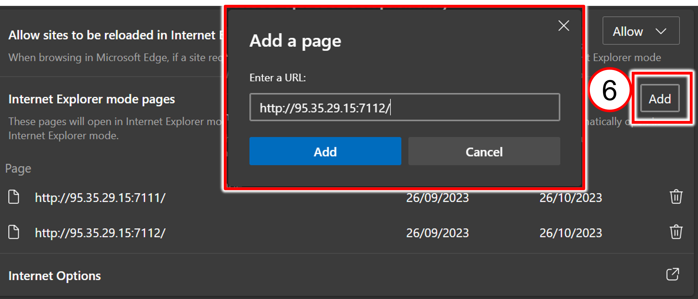
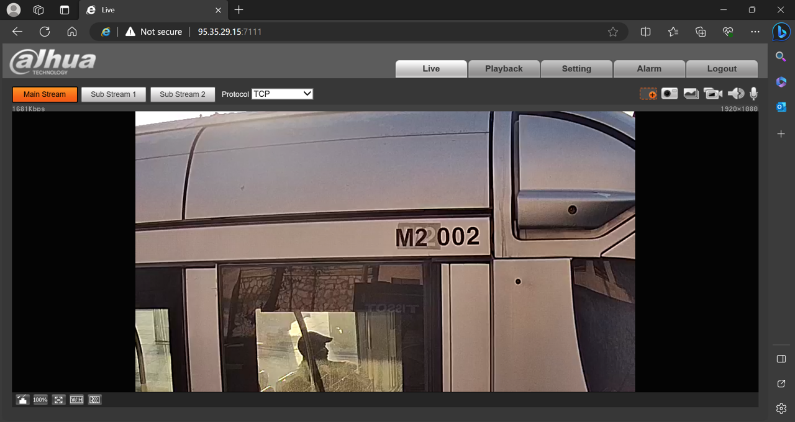

Jerusalem Light Train User Guide
Click to show the Table of Contents
- 1. Light Train Stations - Map and URL List
- 2. Computer Requirements
- 3. Configuring Your Edge Browser
- 4. Logging In to a Camera/Logging Out
- 5. Viewing Live Video (Live Tab)
- 6. Playing Back and Downloading Stored Video (Playback Tab)
- 7. Downloading Video Segments
- 8. Using Daily Event Reports (Received via Email)
1. Light Train Stations - Map and URL List

|
Your IT team must enable you to access the IPs and ports of the cameras. To use the links in the following table, you must add them to your Microsoft Edge browser (see Section 3). |
| Station | Camera 1 (Direction) | Camera 2 (Direction) |
|---|---|---|
Neve Ya’akov - North |
Yitshak Tabenkin |
|
Heil Ha-Avir |
||
Giv’at Ha-Mivtar |
Es-Sahl |
Ammunition Hill |
Central Bus Station |
Ha-Turim |
Kiryat-Moshe |
Mount Herzl |
Yefeh-Nof |
Final |
Ora Jct |
Kiryat Menahem |
Medical School |
3. Configuring Your Edge Browser
-
Open Edge and click the 3-dot menu at upper right
-
Select Settings
-
Menu at left - "Default Browser"
-
Allow sites to be reloaded in Internet Explorer mode (IE); change from "Default" to "Allow"
-
Click the Restart button; wait for restart
 -
Internet Explorer Compatibility
-
Internet Explorer mode pages; click the Add button
-
Add all camera URLs. In URLs, each IP address identifies a station, and each port (typically 7111 or 7112) is for the camera viewing each track/direction. For example:
http://95.35.29.15:7111/
http://95.35.29.15:7112/Your IT team must enable you to access the IPs and ports of the cameras.
Addresses expire after 30 days and must be re-entered.
-

5. Viewing Live Video (Live Tab)

-
Icons at the upper right enable you to zoom in (see Section 5.1) and take still image snapshots (see Section 5.2).
-
Note that the train number recognized by the camera is on the side of the train, above the door.
-
The overlay text at the bottom indicates:
Station Name - Camera Name (Direction); date and time
5.1. Zooming In (Digital Zoom)
Icon at upper right
-
Click icon once, drag a rectangle, then release

-
Zoomed view appears
 -
Click icon again to return to full view
5.2. Taking a Video Snapshot
Icon at upper right
Click icon to save a static image of the currently viewed video; a window opens to display the snapshot.
| Snapshot takes a picture of the full view, even when you are viewing the zoomed view. |
-
From the Live tab, snapshots are saved in
C:\Users\<current Windows username>\WebDownload\LiveSnapshot -
From the Playback tab, snapshots are saved in
C:\Users\<current Windows username>\WebDownload\PlaybackSnapshot
6. Playing Back and Downloading Stored Video (Playback Tab)
|
The system stores 4 months of video. |
6.1. Selecting a Segment (Right-hand Pane)
-
The camera records video 24 hours per day divided into 8-minute segments (also called "records").
-
You can also click on the timeline or drag the small white rectangle indicator to move within the segment (see Section 6.3).
-
For segment download options, see Section 7
6.3. Timeline Controls (Lower Right)
-
Start/end of the timeline is set by the filter at the top of the Segment List pane (see Section 6.1).
-
Buttons at lower right change the timeline scale (resolution). Use this to zoom in on a particular time.
For example: Click on 4:00 A.M. on the timeline, then click the 30min button; the scale of the timeline changes to show 3:45 to 4:15. -
The other controls are used for downloads; see Section 7
6.4. Zooming In (Digital Zoom)
See Section 5.1
6.5. Taking a Video Snapshot
See Section 5.2
7. Downloading Video Segments
|
There are several ways to download segments; the batch method is the fastest (see Section 7.2). |
-
You will see popups reminding you that the video must be STOPPED (not paused) to download
-
You can view downloaded segments using any video player, such as:
-
VLC player (recommended) at
https://www.videolan.org/vlc/download-windows.html -
Windows Media Player
-
7.1. Single Segment File Download
-
Click the down-arrow button next to the segment in the Segment Selection List (see Section 6.1).
-
Button changes to "x" (to stop if needed); percentage progress is displayed next to button
-
Single segment file downloads are saved in:
C:\Users\<current Windows username>\WebDownload\PlaybackRecord -
File names of single segment downloads look like:
01.36.00-01.44.00[R][0@0][63674], where:-
First characters are the segment time period (01.36.00-01.44.00)
-
Remaining characters are internal codes
The Windows File Explorer "file date" is the date the segment was recorded.
The "file time" may be offset due to time zone differences.
-
7.2. Batch Download (Multiple Segment Files)
-
Click the button at the lower left of the Segment Selection List (see Section 6.1).
-
Select the date and time range for the segments to search for.
-
Click Search. All segments with times in the search range will be shown.
-
Use check boxes to select files; there are page controls at the lower right
-
Be sure to select the file type of "mp4" at the bottom of the window BEFORE downloading (the file type column always shows "dav", but the download will be in "mp4" format)
-
Batch downloads are saved by default in (can be changed by clicking Browse): C:\Users\<current Windows username>\WebDownload\PlaybackRecord
-
Click Download; the Download Progress column shows progress of each segment’s download
Filenames have the same format as single segment downloads (see Section 7.1).
7.3. Time Range Download (Single File of Joined Segments)
-
In the Playback tab, select a date from the calendar (see Section 6.1).
-
Select the resolution of the timeline with the buttons at the lower right (see Section 6.3).
-
Click on the timeline for a start time for the range of segments you want to download. You will see the white rectangle indicator; drag it to the desired position if needed.
-
Click the scissors button and verify that the start time in the window is correct. (Disregard the end time until you select it in the next step.)
-
Click on the timeline or drag the indicator to the end time
-
Click the scissors button. Verify that the end time in the window is correct.
-
Click the diskette button to download the range’s video segments into one file.
-
Button changes to "x" (to stop if needed); percentage progress is displayed
-
Time range downloads are saved in:
C:\Users\<current Windows username>\WebDownload\VideoClips
-
|
Since the range’s start/end time will usually not be on an exact border between 8-minute segments, the date range of the downloaded file’s name may be slightly earlier and later than the range you defined. |
8. Using Daily Event Reports (Received via Email)
An Event occurs when a train enters and leaves a station.
Event reports are sent every day, via email as an Excel attachment. They contain Event details from last 24 hours.
8.1. Event Report Station Details Tab
-
Event ID - unique ID identifying the Event
-
Arrival Date/Time; Departure Date/Time - when train arrived/departed
-
Direction - the direction that the train was travelling in when it arrived at the station (can also be the name of the camera viewing that direction)
-
Station - station name
-
Confidence - the read confidence (as a percentage) that the recognition of the train number was correct
-
Door - if the door opened when the train stopped in the station
-
View - link to the image of the train at the station
-
Door - link to a zoomed-in image of the door
-
Number - link to a zoomed-in image of the train number
8.2. Event Report Summary Tab
-
Report - general information about the report
-
Number of Trains per Direction - summary counts of trains passing through the station
-
Number of Trains per Hour - per hour breakdown counts of trains passing through the station
-
Low Confidence Detections - detections with a lower train number read confidence than is acceptable
© INEX Technologies - All rights reserved. Specifications subject to change without notice. All third-party trademarks are the property of their respective owners.
Doc. No. JLT-MAN-002a